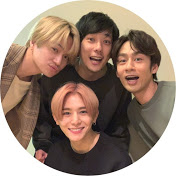
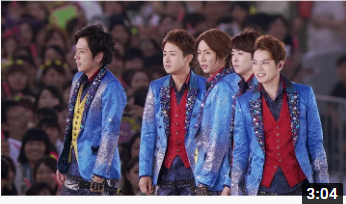
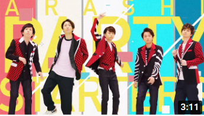

YouTube
#ジャにのチャンネル
#二宮和也
#嵐
生配信の後適当に喋ってたらほんとに適当すぎて使える尺が5分しかなかった件。
1M views 1 month ago
555
0
Share
Save
Report

ジャにのチャンネル
1M subscribers
subscribe
Up next

嵐 - Happiness [Official Live Video]
ARASHI
조회수 11,460,562회

ARASHI - Party Starters [Official Music Video]
ARASHI
조회수 10,049,090회
【櫻井翔】運命の出会いに櫻井くんキョトン顔！！【相葉雅紀】
I LOVE みんなのどうぶつ園チャンネル【公式】
조회수 1,061,155회